Practica Voluntaria 2.7 - Proxy inverso y balanceo de carga con SSL en NGINX
Requisitos antes de comenzar la práctica
Atención, muy importante antes de comenzar
- La práctica 2.4 tiene que funcionar correctamente
- No comenzar la práctica antes de tener la 1.3 funcionando y comprobada
Introducción
A partir de las prácticas anteriores hemos llegado a un escenario donde un proxy inverso actúa de intermediario entre dos servidores web Nginx, balanceando la carga entre ellos.
Ya dijimos que una importante función que podía tener un proxy inverso era realizar el cifrado y descifrado de SSL para utilizar HTTPS en los servidores web. De esta forma se aliviaba la carga de trabajo de los servidores web, ya que es una tarea que consume recursos.
En definitiva, tendríamos un esquema como este:
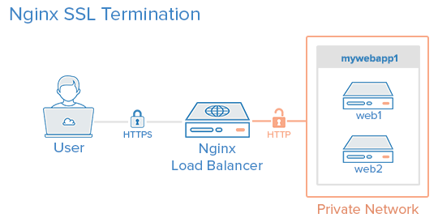
Podría llegarse a pensar que en términos de seguridad no es adecuado que el tráfico de red entre el balanceador de carga y los servidores web vaya sin cifrar (HTTP). Sin embargo, pensando en un caso real, la red privada y el proxy inverso/balanceador de carga, además de estar en la misma red privada, suelen estar administrados por las mismas personas de la misma empresa, por lo que no supone un peligro real que ese tráfico vaya sin cifrar.
Podría cifrarse si fuera necesario, pero entonces pierde sentido que el proxy inverso se encargue del cifrado SSL para HTTPS, ya que haríamos el mismo trabajo dos veces.
Así las cosas, nos quedaremos con el esquema de la imagen de más arriba para la práctica.
Certificados
HTTPS se basa en el uso de certificados digitales.
Grosso modo, cuando entramos en una web vía HTTPS, ésta nos presenta un certificado digital para asegurar que es quién dice ser. ¿Cómo sabemos que ese certificado es válido? Debemos consultar a la Autoridad de Certificación (CA) que emitió ese certificado si es válido.
Las CA son entidades que emiten certificados y su funcionamiento se basa en la confianza. Confiamos en que los certificados emitidos y firmados por esas entidades son reales y funcionales.
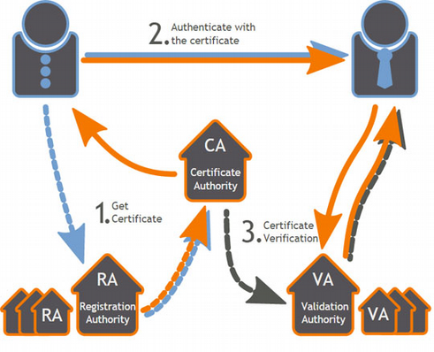
Los navegadores web tienen precargadas las Autoridades de Certificación en las que confían por defecto a la hora de navegar por webs HTTPS:
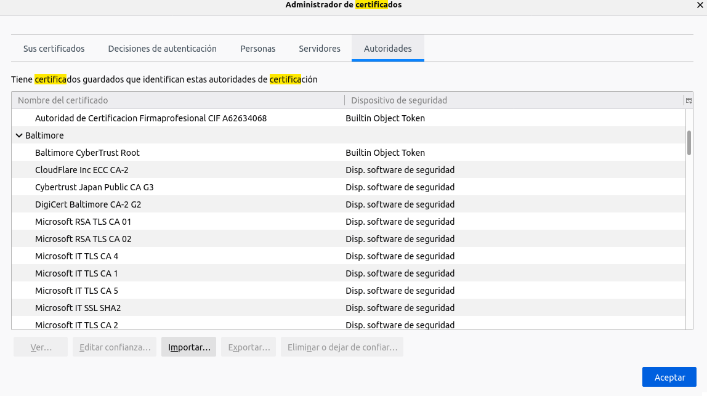
Si accedemos a una web cuyo certificado no haya sido emitido y firmado por una de estas entidades, nos saltará el famoso aviso:
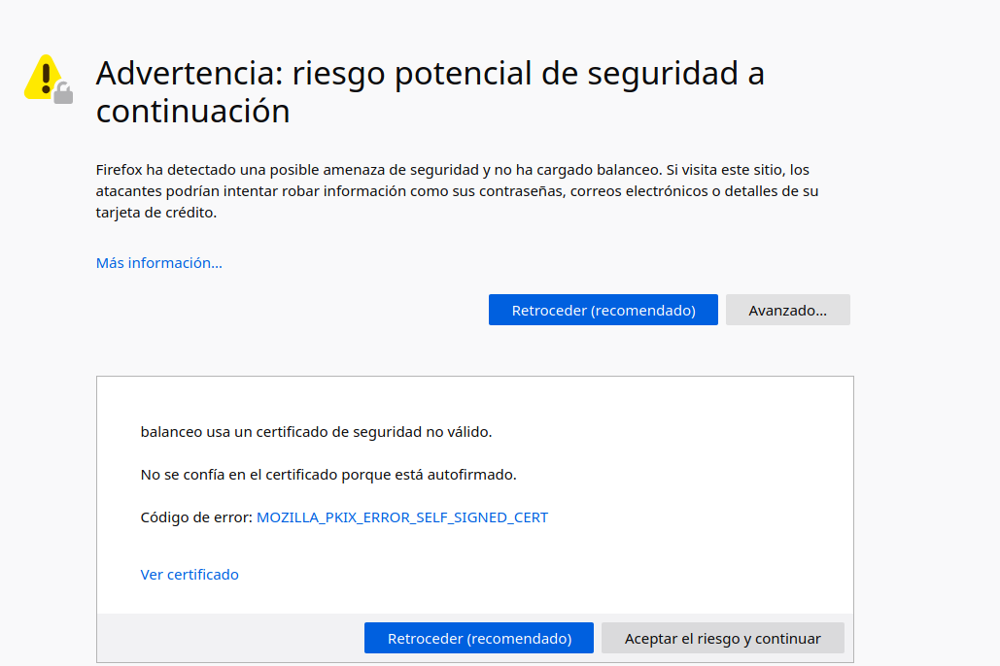
Ya que si el certificado no ha sido emitido y firmado por una CA de confianza, puede que se trate de una web maliciosa que nos suponga un riesgo de seguridad, como bien dice el aviso.
Tarea
Partimos de la configuración exacta de la práctica anterior, que recordemos era esta:

Por lo que en esta práctica simplemente debemos añadir la configuración SSL para el cifrado en el Proxy Inverso:
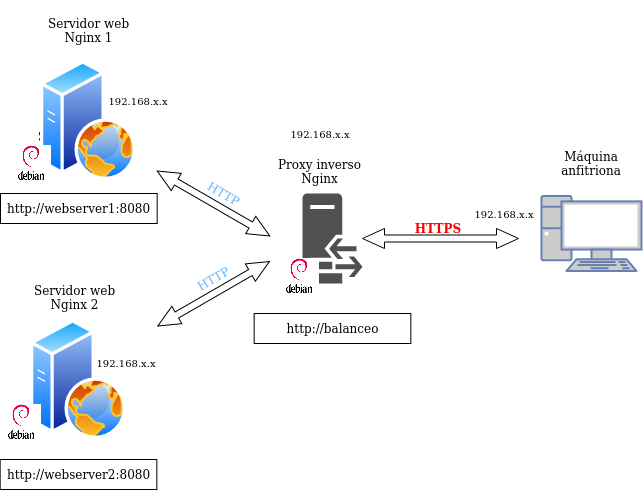
Tal y como quedará la configuración, desde el cliente aún podríamos acceder a los dos servidores web con HTTP (podéis probarlo) pero es algo que solucionaremos en siguientes temas, configurando un firewall para que sólo la IP del proxy inverso pueda acceder por HTTP a los servidores web y nadie más.
Creación de certificado autofirmado
Nosotros no utilizaremos certificados de ninguna CA de confianza, básicamente porque:
-
Nuestros servicios no están publicados en Internet
-
Estos certificados son de pago
Así pues, nosotros crearemos nuestros propios certificados y los firmaremos nosotros mismos como si fuéramos una CA auténtica para poder simular este escenario.
Warning
Esto provocará que cuando accedamos por HTTPS a nuestro sitio web por primera vez, nos salté el aviso de seguridad que se comentaba en la introducción.
En este caso no habrá peligro puesto que estamos 100% seguros que ese certificado lo hemos emitido nosotros para esta práctica, no hay dudas.
Veamos pues el proceso para generar los certificados y las claves asociadas a ellos (privada/pública). En primer lugar debemos crear el siguiente directorio:
/etc/nginx/ssl
Podemos crear el certificado y las claves de forma simultánea con un único comando, donde:
-
openssl: esta es la herramienta por línea de comandos básica para crear y administrar certificados, claves y otros archivos OpenSSL. -
req: este subcomando se utiliza para generar una solicitud de certificados y también solicitudes de firma de certificados (CSR). -
-x509: Esto modifica aún más el subcomando anterior al decirle a la herramienta que queremos crear un certificado autofirmado en lugar de generar una solicitud de firma de certificado, como sucedería normalmente. -
-nodes: Esto le dice a OpenSSL que omita la opción de asegurar nuestro certificado con contraseña. Necesitamos que Nginx pueda leer el archivo sin la intervención del usuario cuando se inicia el servidor. Una contraseña evitaría que esto sucediera ya que tendríamos que introducirla a mano después de cada reinicio. -
-days 365: esta opción establece el tiempo durante el cual el certificado se considerará válido. Lo configuramos para un año. -
-newkey rsa: 2048: Esto especifica que queremos generar un nuevo certificado y una nueva clave al mismo tiempo. No creamos la clave necesaria para firmar el certificado en un paso anterior, por lo que debemos crearla junto con el certificado. La rsa:2048parte le dice que cree una clave RSA de 2048 bits de longitud. -
-keyout: este parámetro le dice a OpenSSL dónde colocar el archivo de clave privada generado que estamos creando. -
-out: Esto le dice a OpenSSL dónde colocar el certificado que estamos creando.
El comando completo sería así:
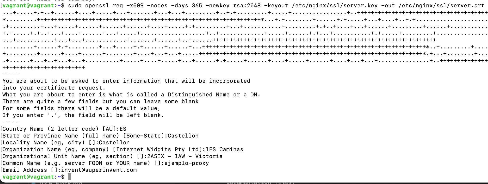
Os solicitará que introduzcáis una serie de parámetros, como véis en el recuadro rojo de abajo de la imagen. Debéis introducir los mismos parámetros que en la imagen excepto en el “Organizational Unit Name” que véis recuadrado en amarillo. Ahí deberéis poner 2DAW – DEAW - Vuestronombre
Configuración SSL en el proxy inverso
De la práctica anterior, dentro del directorio /etc/nginx/sites-available ya debéis tener el archivo de configuración llamado “balanceo”. Es precisamente aquí donde realizaremos la configuración para que el acceso al sitio web se realice mediante SSL (HTTPS).
Dentro del bloque server {…} debéis cambiar el puerto de escucha (listen 80) por lo que véis en la imagen de abajo, añadiendo las siguientes líneas de configuración también, de tal forma que quede:
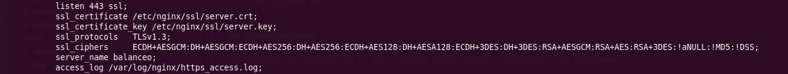
Donde le estáis diciendo que:
-
Escuche en el puerto 443 → Puerto por defecto de HTTPS
-
El directorio donde está el certificado que habéis generado anteriormente
-
El directorio donde está la clave que habéis generado anteriormente
-
Los protocolos y tipos de cifrados que se pueden utilizar → Estas son las versiones de protocolos y los tipos de cifrados considerados seguros a día de hoy (hay muchos más pero no se consideran seguros actualmente)
-
server_nameya lo teníais de la práctica anterior, no hace falta tocarlo -
El archivo donde se guardan los logs cambia de nombre, ahora será https_access.log
Recordad que tras modificar cualquier configuración de un servicio, hay que reiniciar el servicio, en este caso Nginx.
Comprobaciones
-
Si accedéis ahora a https://balanceo os debería saltar un aviso de seguridad debido a que nuestro certificado es autofirmado, como comentábamos anteriormente.
-
Si añadís una una excepción podréis acceder al sitio web y recargando repetidamente la página con F5, veréis que el balanceo de carga se hace correctamente accediendo mediante HTTPS.
-
Para comprobar que los datos del certificado son, efectivamente, los vuestros podéis comprobarlo así. Pulsando en el candado de la barra de búsqueda:
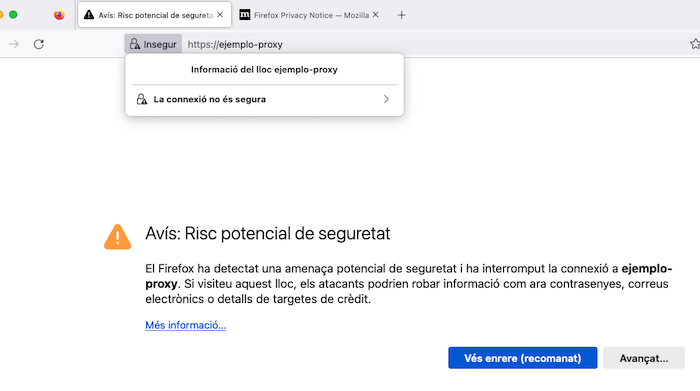
Con más información:

Info
Aquí también podréis eliminar la excepción que habéis añadido en la página de la advertencia de seguridad, por si necesitáis reiniciar las pruebas.
Y por último, ver certificado:
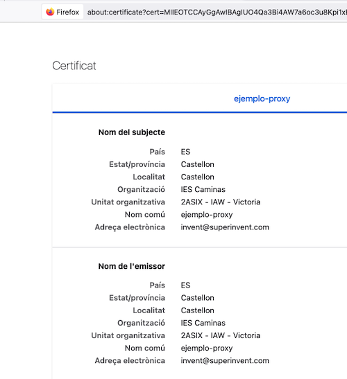
Y podremos ver los detalles:
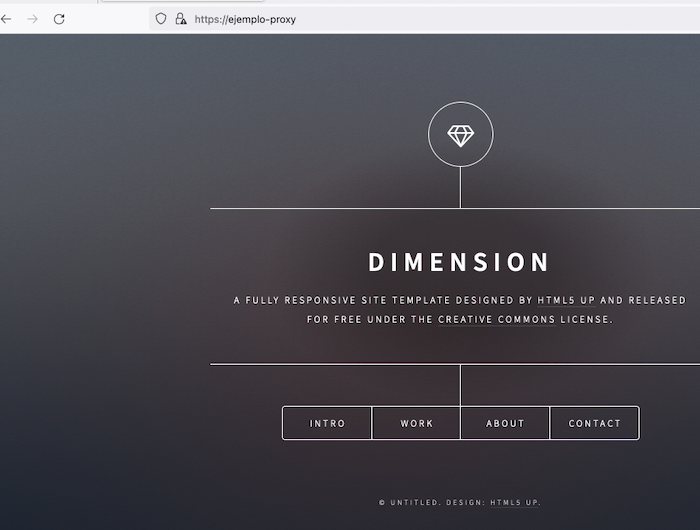
Si ahora intentáis acceder a http://balanceo, ¿deberíais poder acceder? Comprobadlo y describid qué pasa y por qué.
Redirección forzosa a HTTPS
Para que, indistintamente de la forma por la que accedamos al sitio web balanceo, siempre se fuerce a utilizar HTTPS, necesitaremos una configuración adicional.
Necesitamos añadir un bloque “server” adicional y separado del otro, al archivo de configuración de “balanceo”. Algo así:
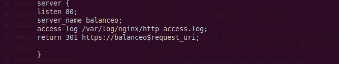
Con esta configuración le estamos diciendo que:
-
Escuche en el puerto 80 (HTTP)
-
Que el nombre al que responderá el servidor/sitio web es balanceo
-
Que guarde los logs de este bloque en ese directorio y con ese nombre
-
Cuando se recibe una petición con las dos condiciones anteriores, se devuelve un código HTTP 301:
-
HTTP 301 Moved Permanently (Movido permanentemente en español) es un código de estado de HTTP que indica que el host ha sido capaz de comunicarse con el servidor pero que el recurso solicitado ha sido movido a otra dirección permanentementeEs muy importante configurar las redirecciones 301 en los sitios web y para ello hay diferentes métodos y sintaxis para realizar la redirección 301.
-
La redirección 301 es un código o comando insertado por un Webmaster que permite redirigir a los usuarios y buscadores de un sitio web de un sitio a otro.
Aclaración
Es decir, lo que estamos haciendo es que cuando se reciba una petición HTTP (puerto 80) en
http://balanceo, se redirija ahttps://balanceo(HTTPS) -
Tarea
-
Eliminad del otro bloque
server{…}la líneas que hagan referencia a escuchar en el puerto 80 (listen 80…). -
Reiniciad el servicio
-
Comprobad ahora que cuando entráis en
http://balanceo, automáticamente os redirige a la versión segura de la web. -
Comprobad que cuando realizáis una petición en el archivo de log
http_access.logaparece la redirección 301 y que, de la misma manera, aparece una petición GET enhttps_access.log.
Cuestiones finals
Cuestión 1
Hemos configurado nuestro proxy inverso con todo lo que nos hace falta pero no nos funciona y da un error del tipo This site can't provide a secure connection, ERR_SSL_PROTOCOL_ERROR.
Dentro de nuestro server block tenemos esto:
server {
listen 443;
ssl_certificate /etc/nginx/ssl/enrico-berlinguer/server.crt;
ssl_certificate_key /etc/nginx/ssl/enrico-berlinguer/server.key;
ssl_protocols TLSv1.3;
ssl_ciphers ECDH+AESGCM:DH+AESGCM:ECDH+AES256:DH+AES256:ECDH+AES128:DH+AES:ECDH+3DES:DH+3DES:RSA+AESGCM:RSA+AES:RSA+3DES:!aNULL:!MD5:!DSS;
server_name enrico-berlinguer;
access_log /var/log/nginx/https_access.log;
location / {
proxy_pass http://red-party;
}
}
Cuestión 2
Imaginad que intentamos acceder a nuestro sitio web HTTPS y nos encontramos con el siguiente error:

Investigad qué está pasando y como se ha de solucionar.
Evaluación
| Criterio | Puntuación |
|---|---|
| Creación correcta del certificado | 1 puntos |
| Configuración SSL correcta del proxy | 3 puntos |
| Comprobaciones | 2 puntos |
| Configuración correcta de la redirección forzosa a HTTPS y comprobaciones | 1 puntos |
| Cuestiones finales | 2 puntos |
| SSe ha prestado especial atención al formato del documento, utilizando la plantilla actualizada y haciendo un correcto uso del lenguaje técnico | 1 punto |